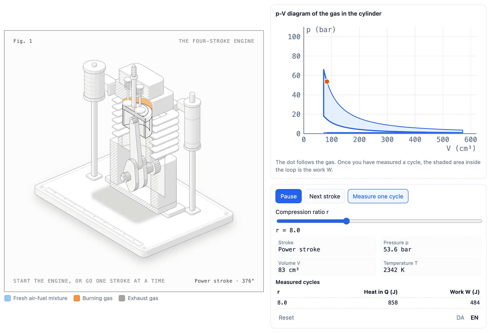

Usually you pick one of two bad options. One file serves all three badly. Or you keep three files, and two of them go out of date. The next two slides show one file that serves all three.

This is the engine slide from section 5, as each reader gets it. It is one file. The extra words sit in hidden detail text. On stage they are hidden. Open the link yourself and they show. The PDF is the same view, saved as pages. You can read this only because detail is switched on.
One command. The PDF always matches the talk.
The command is node export-pdf.mjs death-by-powerpoint --density=guide.
A normal print can’t do this, because the slides animate in. So the script opens
the real deck in Chrome and takes a picture of each finished slide.
Whoever asked for the slides gets them, plus what I said.
It is just plain web files, so hosting costs nothing. It will still open in ten years. No server to update, no database, no login. This deck will be online before the Q&A ends. Publishing is one git push, so I can promise that.